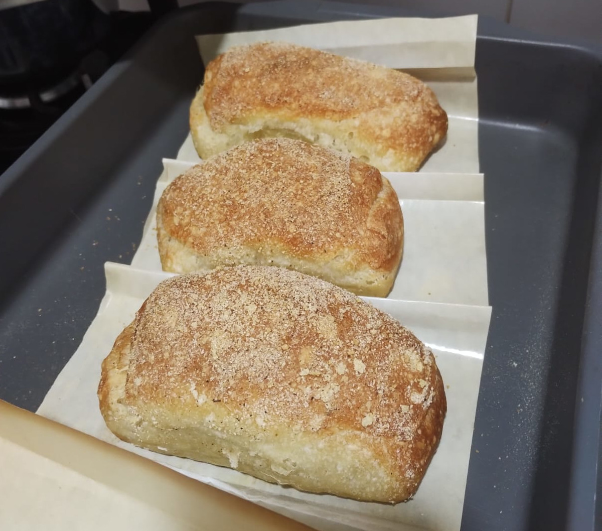

Ciabatta
This is a long fermentation bread recipe I make all often, it takes some time but it's super simple.
In the end you'll get 4 little breads for the week.

(Only 3 are shown because I ate the 4th.)
Ingredients:
- 250g flour
- 5g salt
- 2g dry yeast
- 215g water
- 12g olive oil
Prep:
- In a bowl, mix together flour, salt and yeast.
- Add cold water and olive oil and mix until combined.
- Cover the bowl with a lid or plastic and refrigerate.
- After 30 minutes you'll make the first fold of a series of four folds.
You can now leave it in the refrigerator overnight.
- Preheat the oven at 240C.
- Flour a surface and add your dough, divide it in 4.
- Put the dough on a floured sheetpan and let rise for 45 minutes.
- Bake it for 40 minutes to 1 hour until it get golden.
Back to Home